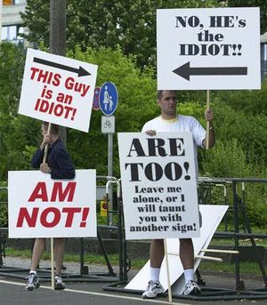

15M
 De: La Frikipedia, la enciclopedia extremadamente seria.
De: La Frikipedia, la enciclopedia extremadamente seria.
El 15M (15 Megas) son unas movidas inventadas en Madriz que mosquean mucho a los fachas teletubies de Intermojonomia. Estas movidas se han extendido "araun de guorld" con otro nombre, 15o (se lee "Quince circulito", no "Quince de octubre").
Frases famosas
- ¡No hay chorizo para tanto pan!
- ¡Que no, que no, que no nos representan en Eurovisión!
- ¡No nos dejáis soñar, no os dejaremos dormir!
- ¡Cuando los de abajo se mueven los de arriba se tambalean! (Los manifestantes son físicos todos)
- ¡Ni archivo A ni archivo B, queremos cambiar de pendrive! (de los frikis de la "mani")
- ¡Menos educación, más corrupción!
- ¡Ay que dolor, que dolor, que el padre de Rajoy no se puso condón!
- ¡Si el perroflauta te vacila tu te callas y lo asimilas! (por un cani indignado)
- ¡Yes, we camp! (sí, nosotros acampamos)
- ¡Violencia es cobrar 600 euros!
- ¡No tenemos casa, nos quedamos en la plaza!
- ¡NiNi (ni estudia, ni trabaja)! nini (ni PP, ni PSOE) (Decid que sí hay que seguir al PGP "Partido Gorrino Popular"
- ¡No hay pan "pa" tanto chorizo!
- ¡Pienso luego estorbo! (se ve que los filósofos apoyaron mucho este movimiento.
Y un sinfín más de frases chorras absurdas que se escuchan el las protestas.
Hábitat de las protestas
 Aquí se pueden ver a dos manifestantes estadounidenses
Suelen darse plazas (esos misteriosos lugares construidos por "gnomos placiles") o parques (lugar de origen del pederasta común tocamenores comunis), pueden ser en diversos países, mundos paralelos, descampados (lugar de origen del yonkarra), planetas o incluso granjas de ponis rosa mutantes, ya que los perroflautas hablan idiomas y da igual del planeta que sean que como indignados se dan aludidos "tós". Se suelen organizar en tribus mohak o asambleas, sentados en el suelo, para ver quienes se comen antes a los niños que se pierden durante el día.
La que seria la nave nodriza de las plazas es la Puerta del Sol. Es también la plaza en la que se inventó esta movida madrileña, porque allá por los 80 los musiquetes salieron un día de desfase para ver si encontraban lugares donde tocar, así que llegó el mierda el Gran Almodovar y le dio por hacer un grupo con lo mejor de cada casa (la élite de la élite) así que, aunque sus películas no existieran todavía y ni si quiera fuera famosete, a la gente le hizo gracia su pelo y decidió que ese hombre tendría éxito y a lo que él hacía lo llamarían ¡la movida madrileña!.
Otros países
En Berlín, no en Niu Llor.
También se sabe que los Jokeys del País de la Piruleta les dio por ponerse en el barrio de las 3000 (un barrio muy chungo) y los G.Q.N.L.I.L.P "Gitanos que no les interesa la política", un grupo sorprendentemente minoritario en la raza gitana. Pues les dio por echar de allí a los pobres jokeys, para montar un puesto de supositorios ambulante.
Tutorial para manifestarse
- Es básico saberse las frases famosas.
- Hay que estar muy calentito.
- Tienes que tener un mínimo de inteligencia para que las frases tengan sentido.
- No hace falta casa, con una plaza puedes darle gracias a Chuck Norris.
- Si te gusta andar, mejor, porque hay "manifas" cortas tipo Neptuno/Sol y otras largas tipo Madriz/Bruselas y alguna sadomasóticas España/El mundo del espaguetti flotante volador.
Críticas de los fachas que no les gusta el movimiento
- Intermojonomia: según ellos los manifestantes son todos unos rojos y unos perroflautas. Normalmente con su magia manipuladora hacen desaparecer a gente y hacen aparecer banderas griegas y coches en llamas. Además de que encargaron a el programa Callejeros para encontrar a los más entrañables de los personajes allí reunidos para que luego salieran en las noticias (esa cosa que echan a la hora de los Simpsons).
- Asperanza Aguirre: no le hace gracia el 15M, ya que se quejan de que ha cortado a los profesores por la mitad, habiendo colegios en los que dan las clases cabezas, brazos o incluso penes. Los del 15M se pusieron unas camisetas verde moco radiactivo para protestar por los profesores recortados.
- PP en general
- Fachadas varias: algunos simios dicen que detrás de las protestas esta RubalCabra... pero en realidad soy yo disfrazado de pony mutante. Y sí, os vigilo a todos con unas cámaras las cuales está metidas en las cañitas de los MierDonald's.
- Antena 3: empezaron hablando bien del 15M pero se dice que el PPP (Partido Popular Paleto) tenía envidia de que les hacían menos caso y entonces solo se ha vuelto a hablar del 15M una vez en Antena 3 (en La Sexta han hablado del 15M 156.528 veces fíjate tú). En las noticias tardaron 43 horas en decirlo (qué poco siendo una cadena del PPP!) pero al final lo dijeron durante una millonésima de segundo (DEMASIADO tiempo digo yo, porque está claro que el 15M no tiene casi ninguna importancia en nuestro mundo).

Pedobear decepcionado al ver que solo había perroflautas.
Opinión de los perroflautas personas que apoyan el 15M
- Jóvenes: consideran que es una oportunidad única, como los han echado de sus casas al menos tienen un lugar en el que dormir.
- Políticos que van de rompedores: apoyan fielmente el movimiento aunque nunca hayan pisado una de esas plazas y se la sude las condiciones de las personas que protestan. Con tal de rasgar votos.
- Señora mayor que les da comida a los protestantes: les parece que los chiquillos de la plaza.
- Antiguos personajes famosetes: intentan conseguir un poco de nueva sonoridad mediática haciendo y dedicando obras artísticas nuevas. Porque desde que llegó el fenómeno de "internes" al mundo, el arte ha ido borrándose de las mentes de las nuevas generaciones. Y esos artistas del pasado se sienten muy solos.
- Pedobear: pensaba que es un lugar fantástico para encontrar nuevas víctimas, pero en lo que no cayó era que en la "mani" solo había perroflautas. Aún estando enfadado sigue confiando en el movimiento, pues cayó en la cuenta que no le interesa que hagan la asignatura de religión obligatoria "como se había dicho por aquel entonces", básicamente por que sería ayudar a su más importante competencia, LA IGLESIA.
Autor(es):
- Krusher
- Harry El del Pote
- Frikisexigirl!!!
- Generibot
- Acido Perantonico
- Maxpoweroriginal
- Guillejocker
Frikipedia 2005-2016, Licencia
GFDL 1.2 - Extraído por FrikiLeaks